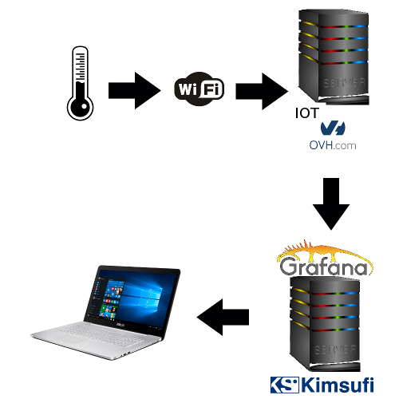
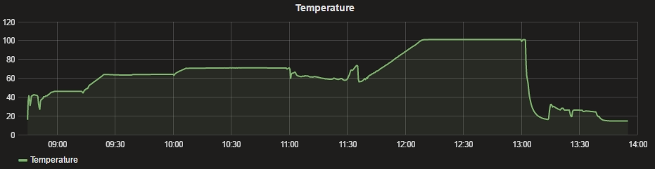
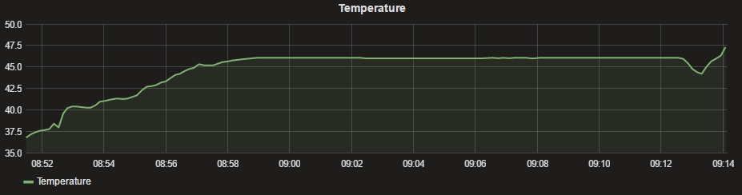
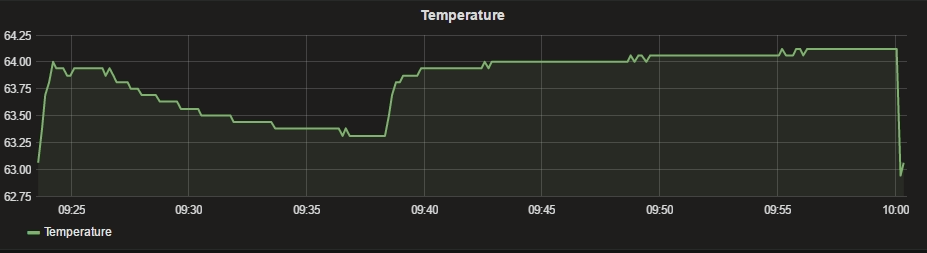
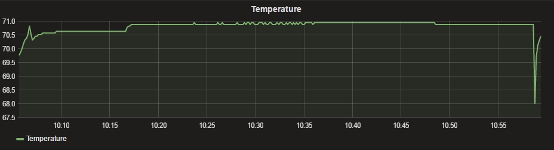
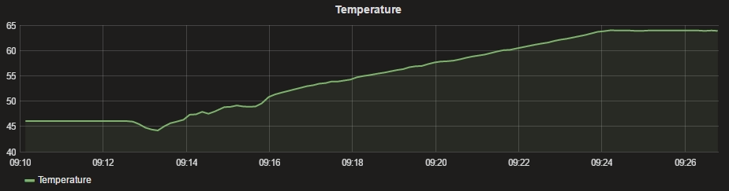
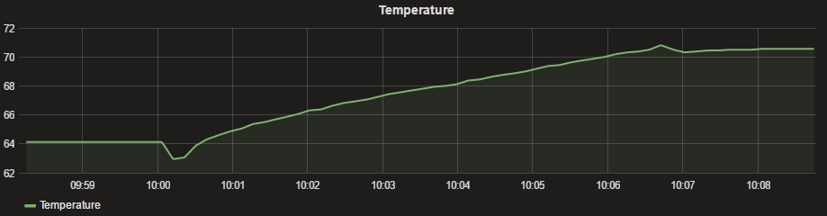

Je me suis fabriqué un thermomètre connecté (http://www.noopy.fr/arduino/iot/), et brassé ma bière avec. Les données sont envoyées sur le service IOT d’OVH. Sur mon serveur, je crée mes graphes avec l’application Grafana. Cet article analyse les résultats.

Les paliers

Dans la vue d’ensemble, on voit bien les différents paliers:- Le palier à 45°c pour faire travailler les protéines (tenue de la mousse)
- Le palier à 64°c pour obtenir les sucres fermentescibles (alcool)
- Le palier à 70°c pour obtenir les sucres non fermentescible (rondeur)
- L’ébulition avec le houblonnage
- La mise en cuve après refroidissement à travers l’échangeur à plaques
Palier d’empâtage

Ce palier à 45°c environ, favorise la tenue de la mousse. En principe j’y reste 15 à 20 minutes. La petite chute de température correspond à la mise en route de l’hélice de brassage. Ça met en évidence le problème d’homogénéité de la température dans le brassin. Ce dernier est très pâteux, et la convection se fait très mal.
Premier palier de saccharification

Là encore, on voit un saut de température. Pendant toute la montée en température, mon hélice tournait. Je l’ai arrêtée à 9H38. C’est pratiquement 1°C d’incertitude sur le brassin. Il faut faire attention car on peut avoir des surprises. Par expérience, je coupe le gaz 1°c à 2°c avant d’atteindre mon palier, quitte à rallumer pour ajuster.
Second palier de saccharification

Ici, encore, on retrouve le saut de température. Je suis obligé de couper mon moteur, car celui-ci chauffe beaucoup. En dehors de la chauffe, je l’éteins. Quand j’aurais un autre moteur plus performant, il tournera en permanence. Je pense aussi revoir mon hélice pour qu’elle brasse mieux le mou.
Les montées en température


Elle sont constantes. On remarque qu’en basse température (de 45°c à 65°c), on est a une chauffe à 1,8°c par minute, alors qu’en haute température ( de 65°c à 70°c), on est à 1°c par minute. C’est dû à la non-isolation de ma cuve. le couvercle permet déjà de garder une grosse partie de la chaleur; mais ce n’est pas suffisant.